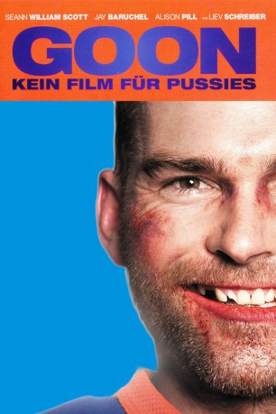
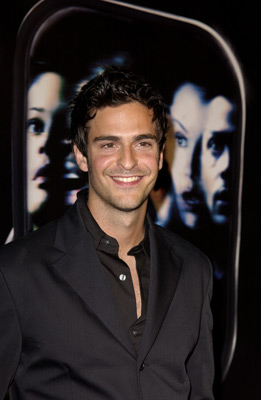

#4031 Goon - Kein Film für Pussies
Alternativ: Goon
 
 IMDB-Wertung: 6.8 / 10
IMDB-Wertung: 6.8 / 10  Metascore: 0
Metascore: 0 
Doug Glatt of Orangetown, Massachusetts is floundering in life, he having no real sense of where he fits - having a "thing" as he calls it. He doesn't have the book smarts to become a doctor like his adoptive father or his gay adoptive brother Ira. And he doesn't have the passion that his best friend Pat has for his self-appointed work, hosting a hockey based cable call-in show, Hot Ice. Because his fists and skull are figuratively like steel, Doug is good at the enforcement part of his job as a bouncer despite he having a naturally friendly childlike approach to dealing with people and situations. An incident involving Doug in the stands of an Orangetown Assassins minor league hockey game leads to its coach, Rollie Hortense, offering Doug a tryout with the team as its enforcer, the tryout regardless of the fact that Rollie has no idea if Doug even knows how to play ice hockey (which he doesn't). Learning just enough hockey skills, Doug makes the team. Rollie, however, quickly ...
Jahr: 2011
Dauer: 91 Minuten
FSK: 16
Land: USA Studio: Magnet ReleasingTonspuren: DTS - ,
Untertitel: Deutsch,
Auflösung: 1080p (1920x1080) Größe: 6174 MB
Genre: Komödie, Sport
Regisseur: Michael Dowse
Drehbuch: Edith Wharton
Soundtrack:
Darsteller:
 Seann William Scott als Doug Glatt
Seann William Scott als Doug Glatt Jay Baruchel als Pat
Jay Baruchel als Pat Alison Pill als Eva
Alison Pill als Eva Liev Schreiber als Ross Rhea
Liev Schreiber als Ross Rhea Eugene Levy als Dr. Glatt
Eugene Levy als Dr. Glatt- Marc-André Grondin als Xavier LaFlamme
 Kim Coates als Ronnie Hortense
Kim Coates als Ronnie Hortense Nicholas Campbell als Rollie Hortense
Nicholas Campbell als Rollie Hortense-  Jonathan Cherry als Marco Belchier
 Ricky Mabe als John Stevenson
Ricky Mabe als John Stevenson George Tchortov als Evgeni
George Tchortov als Evgeni Karl Graboshas als Oleg
Karl Graboshas als Oleg- David Paetkau als Ira
- Jeff Strome als Oldfield
- Jeff Wahl als Reg
- Dave Wheeler als Sportscaster
- Kalyn Bomback als Kelly
- Amy Groening als Teenage Singer
- Ali Hassan als Uncle Stevie
- Sean Skene als Assassin #1 / Concord Player #2
- Georges Laraque als Huntington
- Geoff Banjavich als Brandon
- David Lawrence als Richard
 Aron Tager als Mr. Goldsmith
Aron Tager als Mr. Goldsmith- Sidney Leeder als Young Woman
- Sarah Scheffer als Barbara Cohen
- Mitchell Kummen als Autograph seeker , uncredited
- Christian Lalonde als Simard , uncredited
- Adam McCort als Drunkard , uncredited
- Terry Ray als Assassin Player , uncredited
 Mike Smith als Production Assisstant #2 , uncredited
Mike Smith als Production Assisstant #2 , uncredited- John Paul Tremblay als Production Assisstant #3 , uncredited
- Robb Wells als Production Assisstant #1 , uncredited
- Richard Clarkin als Gord Ogilvey
- Larry Woo als Park Kim
- Stephen Sim als Backup Goalie
 Ellen David als Mrs. Glatt
Ellen David als Mrs. Glatt Mike Bell als Donovan
Mike Bell als Donovan- Bryan Clark als Bartender
- David Duncan als Darren
- Patricia Zogar als Elderly Waitress
- James Durham als Customer
- Jeff Bromley als Guy
- Don Carmody als Guy in Leather Jacket
- Dominick Blais als O'Sullivan
- Curt Keilback als Rod McCaudry
- James Knight als Ref / ND Halifax Player #1
- Tom Anniko als Shamrock's Coach
- Gabriel Daniels als Blanko
- Ken St. Mars als Hamilton Defenseman
Datei: X:\2011(G-M)\Goon - Kein Film für Pussies (2011, FSK16, 1920x1080).mkv seit 14.07.2016
Festplatte: HD 2011(G-Z)
 Es gibt insgesamt 100 Filme in der Gruppe '2011(G-M)'
Es gibt insgesamt 100 Filme in der Gruppe '2011(G-M)'